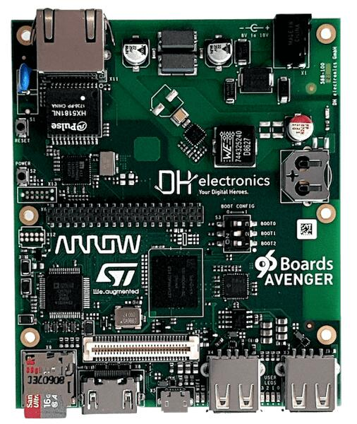

Avenger96
96Boards Avenger96
概述
96Boards Avenger96 开发板基于 ST Microelectronics STM32MP157A 多核处理器，由双核 Cortex®-A7 和单核 Cortex®-M4 组成。Zephyr OS 已移植为在 Cortex®-M4 核上运行。
开发板特性：
PMIC: STPMIC1A
RAM：1024 MB @ 533MHz
存储：
eMMC：v4.51，8 GB
QSPI: 2Mbyte
EEPROM：128 字节
microSD 插座：UHS-1 v3.01
以太网：10/100/1000 Mbit/s，符合 IEEE 802.3
无线：
WiFi: 5 GHz & 2.4GHz IEEE 802.11a/b/g/n/ac
蓝牙：v4.2（BR/EDR/BLE）
USB:
主机：2 个 type A，2.0 高速
OTG：1 个 type micro-AB，2.0 高速
HDMI：WXGA（1366x768）@ 60 fps，HDMI 1.4
连接器：
40 针低速排针
60 针高速排针
LEDs:
4 个绿色用户 LED
1 个蓝色蓝牙 LED
1 个黄色 WiFi LED
1 个红色电源 LED

有关该开发板的更多信息，参见 96Boards website。
硬件
STM32MP157A SoC 提供以下硬件功能：
内核：
32 位双核 Arm® Cortex®-A7
每个内核有 32 KB L1 指令缓存和 32 KB L1 数据缓存
256 KB 统一二级缓存
Arm® NEON™
带 FPU/MPU 的 32 位 Arm® Cortex®-M4
最高 209 MHz（最高 703 CoreMark®）
存储器：
外部 DDR 存储器，最大 1 GB。
708 KB 内部 SRAM：256 KB AXI SYSRAM + 384 KB AHB SRAM + 备份域中的 64 KB AHB SRAM。
双模 Quad-SPI 存储器接口
灵活的外部存储器控制器，数据总线最高 16 位
时钟管理：
内部振荡器：64 MHz HSI 振荡器、4 MHz CSI 振荡器、32 kHz LSI 振荡器
外部振荡器：8-48 MHz HSE 振荡器、32.768 kHz LSE 振荡器
6 个支持小数模式的 PLL
通用输入/输出：
最多 176 个支持中断的 I/O 端口
互连矩阵
3 个 DMA 控制器
通信外设：
6 × I2C FM+ (1 Mbit/s, SMBus/PMBus)
4 个 UART + 4 个 USART（12.5 Mbit/s，ISO7816 接口、LIN、IrDA、SPI 从机）
6 个 SPI（50 Mbit/s，其中 3 个支持音频级精度的全双工 I2S）
4 个 SAI（立体声音频：I2S、PDM、SPDIF Tx）
SPDIF Rx，4 路输入
HDMI-CEC 接口
MDIO 从机接口
3 个 SDMMC，最高 8 位（SD / e•MMC™ / SDIO）
2 个 CAN 控制器，支持 CAN FD 协议，具备 TTCAN 能力
可同时使用 2 个 USB 2.0 高速主机 + 1 个 USB 2.0 全速 OTG
10/100M 或千兆以太网 GMAC（IEEE 1588v2 硬件，MII/RMII/GMII/RGMI）
8 至 14 位摄像头接口，最高 140 MB/s
6 种模拟外设
2 个 ADC，最高分辨率 16 位。
1 个温度传感器
2 个 12 位 D/A 转换器（1 MHz）
1 个用于 Σ-Δ 调制器的数字滤波器（DFSDM），8 个通道/6 个滤波器
内部或外部 ADC/DAC 参考电压 VREF+
图形：
3D GPU：Vivante® - OpenGL® ES 2.0
LCD-TFT 控制器，最高 24 位 // RGB888，最高 WXGA（1366 × 768）@60 fps
MIPI® DSI，2 条数据通道，每条最高 1 GHz
定时器：
2 个 32 位定时器，最多 4 路 IC/OC/PWM 或脉冲计数器，并支持正交（增量）编码器输入
2 个 16 位高级电机控制定时器
10 个 16 位通用定时器（包括 2 个不带 PWM 的基本定时器）
5 个 16 位低功耗定时器
RTC，具有亚秒级精度和硬件日历
2 × 4 个 Cortex®-A7 系统定时器（安全、非安全、虚拟、虚拟机监控器）
1 个 Cortex®-M4 SysTick 定时器
硬件加速：
HASH (MD5, SHA-1, SHA224, SHA256), HMAC
2 个真随机数发生器（每个含 3 个振荡器）
2 个 CRC 计算单元
调试模式：
Arm® CoreSight™ 跟踪和调试：SWD 和 JTAG 接口
8 KB 嵌入式跟踪缓冲区
3072 位熔丝，包括 96 位唯一 ID，最多 1184 位可供用户使用
有关 STM32P157A 的更多信息，请参阅：
支持的功能
96b_avenger96 开发板支持下列硬件功能。
说明
The list of supported hardware features was not generated. Run a full documentation build for the required metadata to be available.
连接与 IO
96Boards Avenger96 开发板原理图请参阅：Avenger96 board schematics。
Zephyr 默认外设映射：
UART_7 TX/RX/RTS/CTS : PE8/PE7/PE9/PE10（UART 控制台）
UART_4 TX/RX : PD1/PB2
系统时钟
Cortex®-M4 内核配置为以 209 MHz 时钟频率运行。该值必须与配置的 mlhclk_ck 频率一致。
串口
96Boards Avenger96 开发板有 3 个 U(S)ART。Zephyr 控制台输出默认分配到 RAM 控制台，由 Cortex®-A7 核上的 Linux Remoteproc 框架转储。也可以将 Zephyr 控制台输出分配到 UART7，该 UART 默认禁用。可以通过开发板设备树和开发板文件 96b_avenger96_defconfig（或项目文件 prj.conf）启用 UART 控制台，这会禁用现有的 RAM 控制台输出。UART 控制台的默认设置为 115200 8N1。
编程与调试
STM32MP157A 没有供 Cortex®-M4 使用的 QSPI Flash，需要由 Cortex®-A7 核启动它。Cortex®-A7 核负责将 Cortex®-M4 二进制应用程序加载到 RAM 中，并使 Cortex®-M4 退出复位。Cortex®-A7 可以在引导加载程序阶段或 Linux 系统启动后执行这些步骤。
Cortex®-M4 最多可以使用 2 种不同的 RAM。程序指针从地址 0x00000000（RETRAM）开始，向量表应加载到该地址。Cortex®-A7 和 Cortex®-M4 的存储器映射如下：
区域 |
Cortex®-A7 |
Cortex®-M4 |
大小 |
|---|---|---|---|
RETRAM |
0x38000000-0x3800FFFF |
0x00000000-0x0000FFFF |
64KB |
MCUSRAM |
0x10000000-0x1005FFFF |
0x10000000-0x1005FFFF |
384KB |
DDR |
0xC0000000-0xFFFFFFFF |
最大 1 GB |
有关加载和启动 Cortex-M4 固件的说明，请参阅 wiki 页面 stm32mp157 boot Cortex-M4 firmware。
调试
可以使用 OpenOCD 和 GDB 调试应用程序。下面提出的方案基于 Linux STM32MP1 SDK 的 OpenOCD，仅适用于 Linux 环境。固件必须先由 Cortex®-A7 加载，然后开发者使用 OpenOCD 将调试器附加到正在运行的 Zephyr 上。
前提条件
安装 stm32mp1 developer package。
在专用终端中启动 OpenOCD
启动 sdk 环境:
source <SDK installation directory>/environment-setup-cortexa7hf-neon-vfpv4-openstlinux_weston-linux-gnueabi
启动 OpenOCD:
${OECORE_NATIVE_SYSROOT}/usr/bin/openocd -s ${OECORE_NATIVE_SYSROOT}/usr/share/openocd/scripts -f board/stm32mp15x_ev1_jlink_jtag.cfg
在 Zephyr 环境中运行 gdb
# On Linux cd $ZEPHYR_BASE/samples/hello_world # Build the application: west build -b 96b_avenger96 # Now start a debug session: west debug